- 00 开篇词 Java程序员如何快速成长？.md
- 01 Web容器学习路径.md
- 02 HTTP协议必知必会.md
- 03 你应该知道的Servlet规范和Servlet容器.md
- 04 实战：纯手工打造和运行一个Servlet.md
- 05 Tomcat系统架构（上）： 连接器是如何设计的？.md
- 06 Tomcat系统架构（下）：聊聊多层容器的设计.md
- 07 Tomcat如何实现一键式启停？.md
- 08 Tomcat的“高层们”都负责做什么？.md
- 09 比较：Jetty架构特点之Connector组件.md
- 10 比较：Jetty架构特点之Handler组件.md
- 11 总结：从Tomcat和Jetty中提炼组件化设计规范.md
- 12 实战：优化并提高Tomcat启动速度.md
- 13 热点问题答疑（1）：如何学习源码？.md
- 14 NioEndpoint组件：Tomcat如何实现非阻塞I_O？.md
- 15 Nio2Endpoint组件：Tomcat如何实现异步I_O？.md
- 16 AprEndpoint组件：Tomcat APR提高I_O性能的秘密.md
- 17 Executor组件：Tomcat如何扩展Java线程池？.md
- 18 新特性：Tomcat如何支持WebSocket？.md
- 19 比较：Jetty的线程策略EatWhatYouKill.md
- 20 总结：Tomcat和Jetty中的对象池技术.md
- 21 总结：Tomcat和Jetty的高性能、高并发之道.md
- 22 热点问题答疑（2）：内核如何阻塞与唤醒进程？.md
- 23 Host容器：Tomcat如何实现热部署和热加载？.md
- 24 Context容器（上）：Tomcat如何打破双亲委托机制？.md
- 25 Context容器（中）：Tomcat如何隔离Web应用？.md
- 26 Context容器（下）：Tomcat如何实现Servlet规范？.md
- 27 新特性：Tomcat如何支持异步Servlet？.md
- 28 新特性：Spring Boot如何使用内嵌式的Tomcat和Jetty？.md
- 29 比较：Jetty如何实现具有上下文信息的责任链？.md
- 30 热点问题答疑（3）：Spring框架中的设计模式.md
- 31 Logger组件：Tomcat的日志框架及实战.md
- 32 Manager组件：Tomcat的Session管理机制解析.md
- 33 Cluster组件：Tomcat的集群通信原理.md
- 34 JVM GC原理及调优的基本思路.md
- 35 如何监控Tomcat的性能？.md
- 36 Tomcat I_O和线程池的并发调优.md
- 37 Tomcat内存溢出的原因分析及调优.md
- 38 Tomcat拒绝连接原因分析及网络优化.md
- 39 Tomcat进程占用CPU过高怎么办？.md
- 40 谈谈Jetty性能调优的思路.md
- 41 热点问题答疑（4）： Tomcat和Jetty有哪些不同？.md
- 特别放送 如何持续保持对学习的兴趣？.md
- 结束语 静下心来，品味经典.md
35 如何监控Tomcat的性能？
专栏上一期我们分析了JVM GC的基本原理以及监控和分析工具，今天我们接着来聊如何监控Tomcat的各种指标，因为只有我们掌握了这些指标和信息，才能对Tomcat内部发生的事情一目了然，让我们明白系统的瓶颈在哪里，进而做出调优的决策。
在今天的文章里，我们首先来看看到底都需要监控Tomcat哪些关键指标，接着来具体学习如何通过JConsole来监控它们。如果系统没有暴露JMX接口，我们还可以通过命令行来查看Tomcat的性能指标。
Web应用的响应时间是我们关注的一个重点，最后我们通过一个实战案例，来看看Web应用的下游服务响应时间比较长的情况下，Tomcat的各项指标是什么样子的。
Tomcat的关键指标
Tomcat的关键指标有吞吐量、响应时间、错误数、线程池、CPU以及JVM内存。
我来简单介绍一下这些指标背后的意义。其中前三个指标是我们最关心的业务指标，Tomcat作为服务器，就是要能够又快有好地处理请求，因此吞吐量要大、响应时间要短，并且错误数要少。
而后面三个指标是跟系统资源有关的，当某个资源出现瓶颈就会影响前面的业务指标，比如线程池中的线程数量不足会影响吞吐量和响应时间；但是线程数太多会耗费大量CPU，也会影响吞吐量；当内存不足时会触发频繁地GC，耗费CPU，最后也会反映到业务指标上来。
那如何监控这些指标呢？Tomcat可以通过JMX将上述指标暴露出来的。JMX（Java Management Extensions，即Java管理扩展）是一个为应用程序、设备、系统等植入监控管理功能的框架。JMX使用管理MBean来监控业务资源，这些MBean在JMX MBean服务器上注册，代表JVM中运行的应用程序或服务。每个MBean都有一个属性列表。JMX客户端可以连接到MBean Server来读写MBean的属性值。你可以通过下面这张图来理解一下JMX的工作原理：
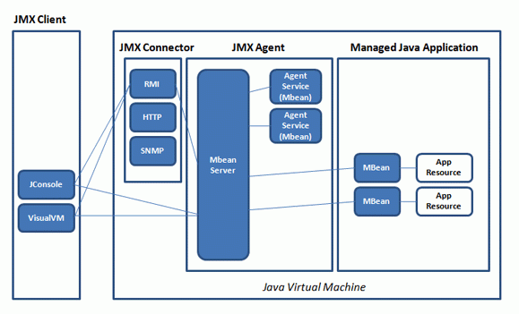
Tomcat定义了一系列MBean来对外暴露系统状态，接下来我们来看看如何通过JConsole来监控这些指标。
通过JConsole监控Tomcat
首先我们需要开启JMX的远程监听端口，具体来说就是设置若干JVM参数。我们可以在Tomcat的bin目录下新建一个名为setenv.sh的文件（或者setenv.bat，根据你的操作系统类型），然后输入下面的内容：
export JAVA_OPTS="${JAVA_OPTS} -Dcom.sun.management.jmxremote"
export JAVA_OPTS="${JAVA_OPTS} -Dcom.sun.management.jmxremote.port=9001"
export JAVA_OPTS="${JAVA_OPTS} -Djava.rmi.server.hostname=x.x.x.x"
export JAVA_OPTS="${JAVA_OPTS} -Dcom.sun.management.jmxremote.ssl=false"
export JAVA_OPTS="${JAVA_OPTS} -Dcom.sun.management.jmxremote.authenticate=false"
重启Tomcat，这样JMX的监听端口9001就开启了，接下来通过JConsole来连接这个端口。
jconsole x.x.x.x:9001
我们可以看到JConsole的主界面：
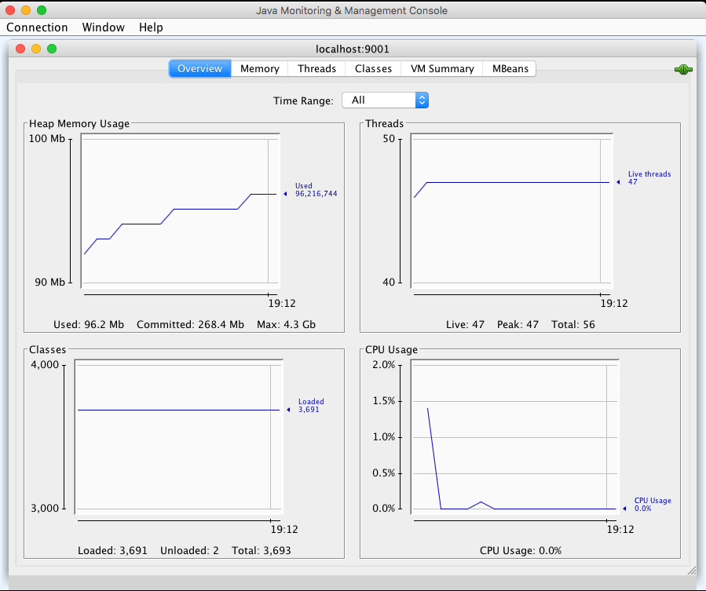
前面我提到的需要监控的关键指标有吞吐量、响应时间、错误数、线程池、CPU以及JVM内存，接下来我们就来看看怎么在JConsole上找到这些指标。
吞吐量、响应时间、错误数
在MBeans标签页下选择GlobalRequestProcessor，这里有Tomcat请求处理的统计信息。你会看到Tomcat中的各种连接器，展开“http-nio-8080”，你会看到这个连接器上的统计信息，其中maxTime表示最长的响应时间，processingTime表示平均响应时间，requestCount表示吞吐量，errorCount就是错误数。
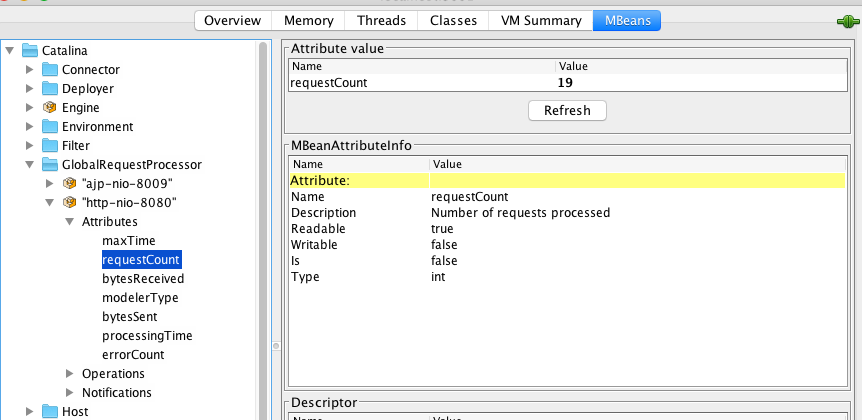
线程池
选择“线程”标签页，可以看到当前Tomcat进程中有多少线程，如下图所示：
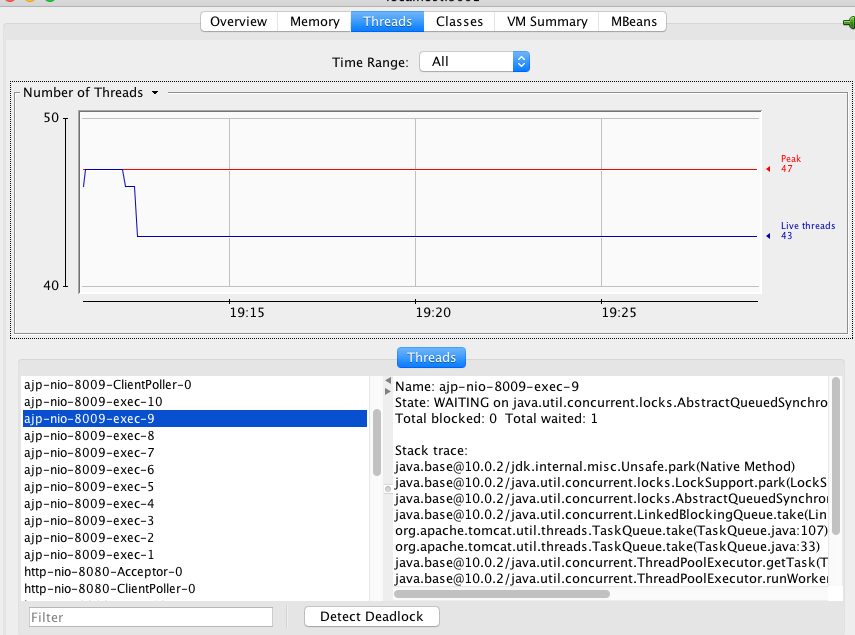
图的左下方是线程列表，右边是线程的运行栈，这些都是非常有用的信息。如果大量线程阻塞，通过观察线程栈，能看到线程阻塞在哪个函数，有可能是I/O等待，或者是死锁。
CPU
在主界面可以找到CPU使用率指标，请注意这里的CPU使用率指的是Tomcat进程占用的CPU，不是主机总的CPU使用率。
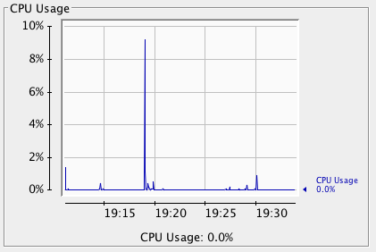
JVM内存
选择“内存”标签页，你能看到Tomcat进程的JVM内存使用情况。
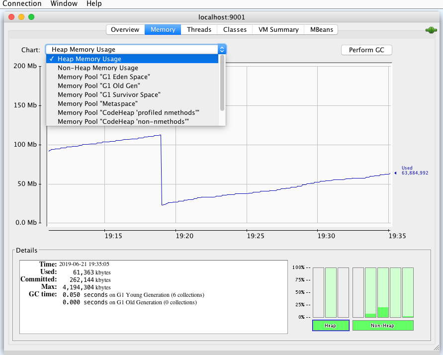
你还可以查看JVM各内存区域的使用情况，大的层面分堆区和非堆区。堆区里有分为Eden、Survivor和Old。选择“VM Summary”标签，可以看到虚拟机内的详细信息。
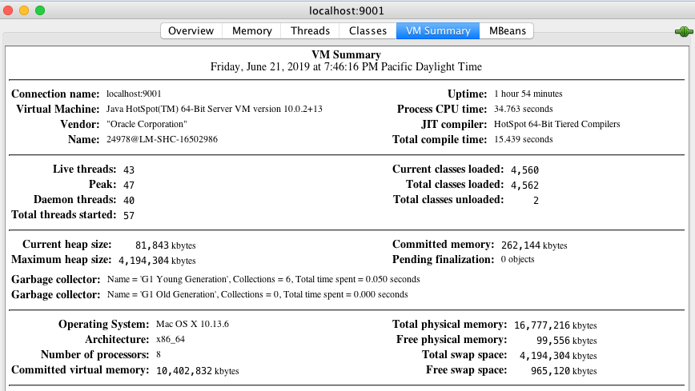
命令行查看Tomcat指标
极端情况下如果Web应用占用过多CPU或者内存，又或者程序中发生了死锁，导致Web应用对外没有响应，监控系统上看不到数据，这个时候需要我们登陆到目标机器，通过命令行来查看各种指标。
1.首先我们通过ps命令找到Tomcat进程，拿到进程ID。
2.接着查看进程状态的大致信息，通过cat/proc/<pid>/status命令：
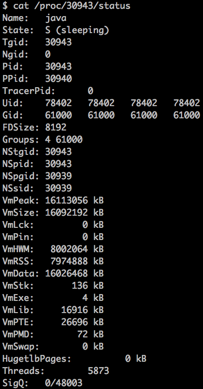
3.监控进程的CPU和内存资源使用情况：
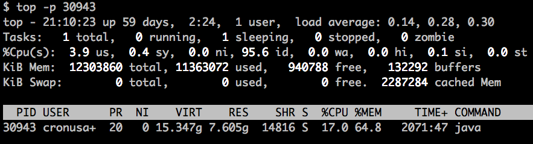
4.查看Tomcat的网络连接，比如Tomcat在8080端口上监听连接请求，通过下面的命令查看连接列表：
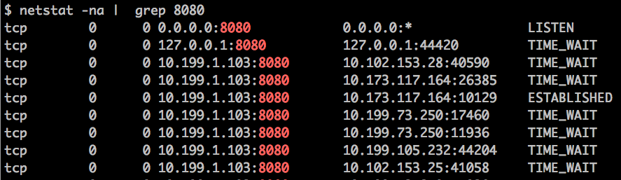
你还可以分别统计处在“已连接”状态和“TIME_WAIT”状态的连接数：
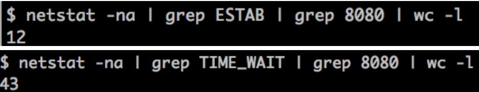
5.通过ifstat来查看网络流量，大致可以看出Tomcat当前的请求数和负载状况。
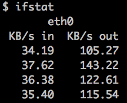
实战案例
在这个实战案例中，我们会创建一个Web应用，根据传入的参数latency来休眠相应的秒数，目的是模拟当前的Web应用在访问下游服务时遇到的延迟。然后用JMeter来压测这个服务，通过JConsole来观察Tomcat的各项指标，分析和定位问题。
主要的步骤有：
1.创建一个Spring Boot程序，加入下面代码所示的一个RestController：
@RestController
public class DownStreamLatency {
@RequestMapping("/greeting/latency/{seconds}")
public Greeting greeting(@PathVariable long seconds) {
try {
Thread.sleep(seconds * 1000);
} catch (InterruptedException e) {
e.printStackTrace();
}
Greeting greeting = new Greeting("Hello World!");
return greeting;
}
}
从上面的代码我们看到，程序会读取URL传过来的seconds参数，先休眠相应的秒数，再返回请求。这样做的目的是，客户端压测工具能够控制服务端的延迟。
为了方便观察Tomcat的线程数跟延迟之间的关系，还需要加大Tomcat的最大线程数，我们可以在application.properties文件中加入这样一行：
server.tomcat.max-threads=1000server.tomcat.max-threads=1000
2.启动JMeter开始压测，这里我们将压测的线程数设置为100：
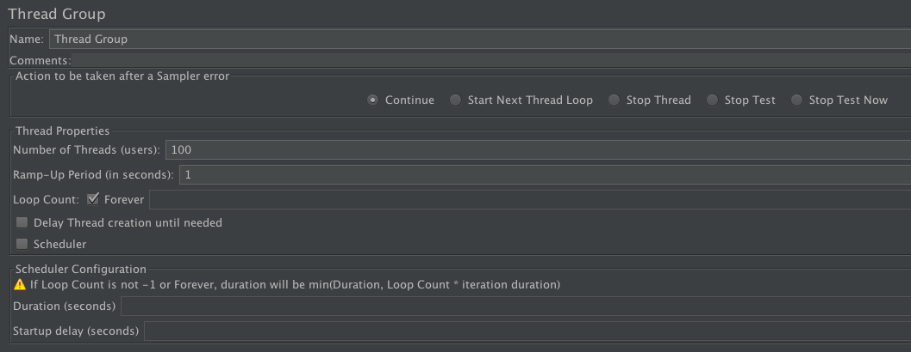
请你注意的是，我们还需要将客户端的Timeout设置为1000毫秒，这是因为JMeter的测试线程在收到响应之前，不会发出下一次请求，这就意味我们没法按照固定的吞吐量向服务端加压。而加了Timeout以后，JMeter会有固定的吞吐量向Tomcat发送请求。
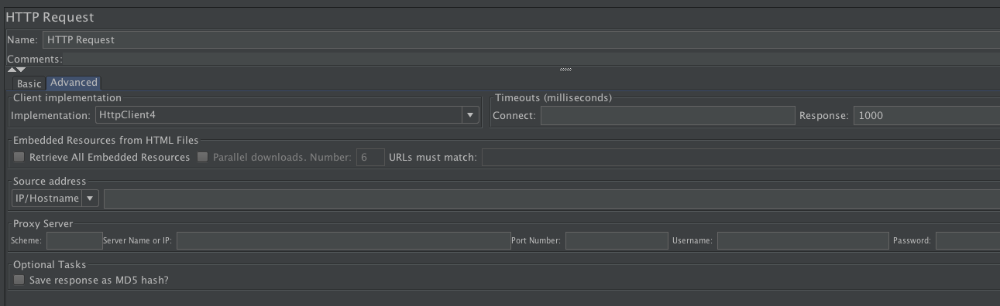
3.开启测试，这里分三个阶段，第一个阶段将服务端休眠时间设为2秒，然后暂停一段时间。第二和第三阶段分别将休眠时间设置成4秒和6秒。
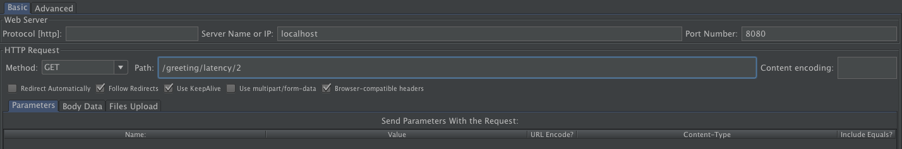
4.最后我们通过JConsole来观察结果：
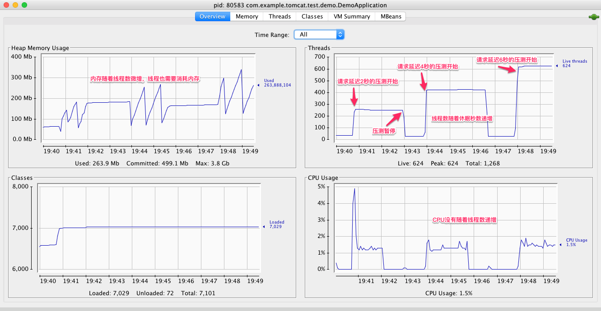
下面我们从线程数、内存和CPU这三个指标来分析Tomcat的性能问题。
- 首先看线程数，在第一阶段时间之前，线程数大概是40，第一阶段压测开始后，线程数增长到250。为什么是250呢？这是因为JMeter每秒会发出100个请求，每一个请求休眠2秒，因此Tomcat需要200个工作线程来干活；此外Tomcat还有一些其他线程用来处理网络通信和后台任务，所以总数是250左右。第一阶段压测暂停后，线程数又下降到40，这是因为线程池会回收空闲线程。第二阶段测试开始后，线程数涨到了420，这是因为每个请求休眠了4秒；同理，我们看到第三阶段测试的线程数是620。
- 我们再来看CPU，在三个阶段的测试中，CPU的峰值始终比较稳定，这是因为JMeter控制了总体的吞吐量，因为服务端用来处理这些请求所需要消耗的CPU基本也是一样的。
- 各测试阶段的内存使用量略有增加，这是因为线程数增加了，创建线程也需要消耗内存。
从上面的测试结果我们可以得出一个结论：对于一个Web应用来说，下游服务的延迟越大，Tomcat所需要的线程数越多，但是CPU保持稳定。所以如果你在实际工作碰到线程数飙升但是CPU没有增加的情况，这个时候你需要怀疑，你的Web应用所依赖的下游服务是不是出了问题，响应时间是否变长了。
本期精华
今天我们学习了Tomcat中的关键的性能指标以及如何监控这些指标：主要有吞吐量、响应时间、错误数、线程池、CPU以及JVM内存。
在实际工作中，我们需要通过观察这些指标来诊断系统遇到的性能问题，找到性能瓶颈。如果我们监控到CPU上升，这时我们可以看看吞吐量是不是也上升了，如果是那说明正常；如果不是的话，可以看看GC的活动，如果GC活动频繁，并且内存居高不下，基本可以断定是内存泄漏。
课后思考
请问工作中你如何监控Web应用的健康状态？遇到性能问题的时候是如何做问题定位的呢？
不知道今天的内容你消化得如何？如果还有疑问，请大胆的在留言区提问，也欢迎你把你的课后思考和心得记录下来，与我和其他同学一起讨论。如果你觉得今天有所收获，欢迎你把它分享给你的朋友。
© 2019 - 2023 Liangliang Lee. Powered by gin and hexo-theme-book.